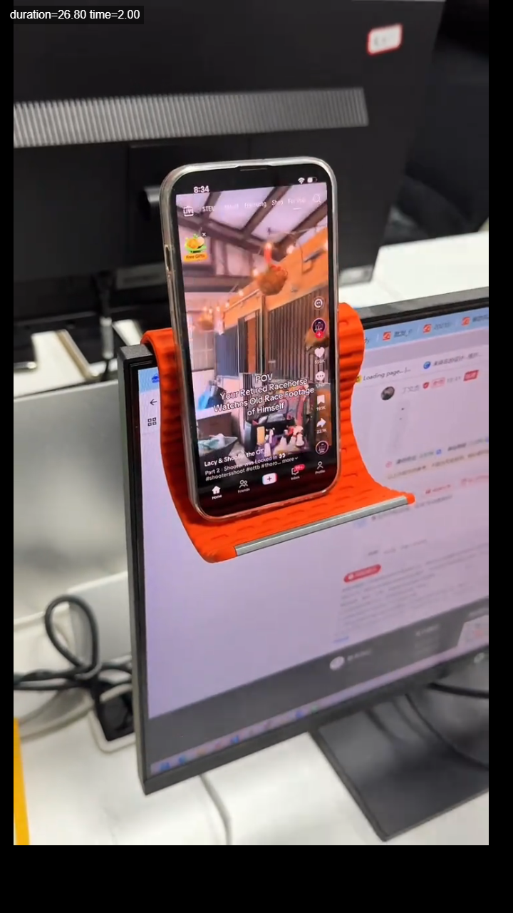
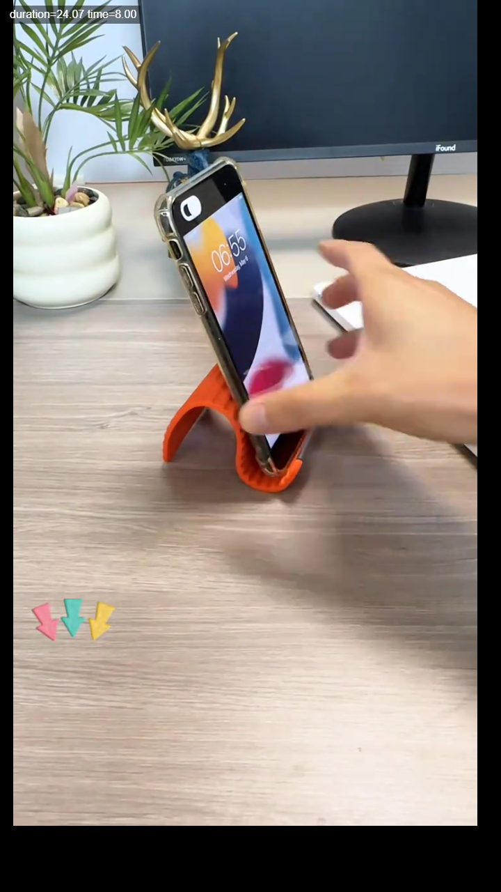
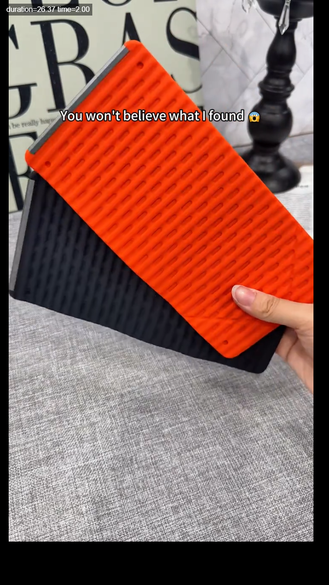
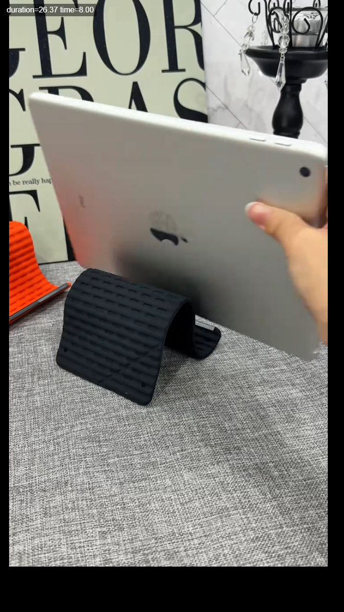
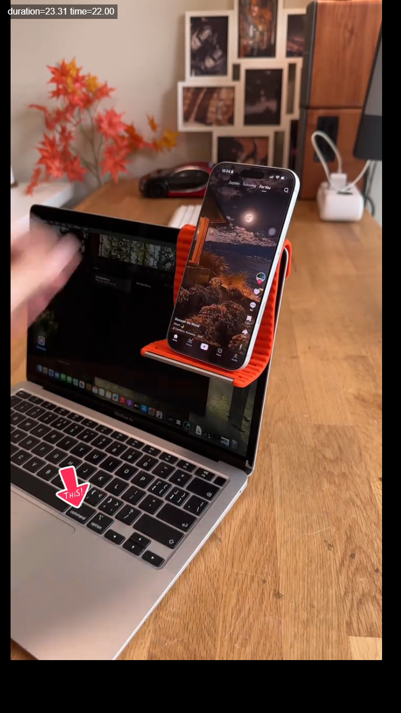

Bend and Place Demo
You just bend it into the shape you need, and it turns into a phone stand in seconds.
Purpose: reduces setup confusion and shows viewers exactly how to use it.
Flexible Silicone Aluminum Phone Holder Stand | Bendable phone and tablet stand
Create a natural creator-style video that shows the result in the first 3 seconds: the phone stays beside the screen, hands-free. Keep the tone casual, useful, and lightly surprised.

Stop looking down at your phone every time you work.
Best visual: phone held beside a monitor or laptop.
Hits the desk-work pain point immediately.

I thought this was just a simple silicone strip, until I bent it like this.
Best visual: hands bending the stand, then placing the phone in.
Creates curiosity and explains the bendable feature.

You won’t get it until you see how it holds your phone.
Best visual: product close-up, then cut to phone/tablet support.
Use case must appear within 1-2 seconds.
You just bend it into the shape you need, and it turns into a phone stand in seconds.
Purpose: reduces setup confusion and shows viewers exactly how to use it.

It is not only for phones. It can also hold a tablet for watching, reading, or video calls.
Purpose: makes the product feel more useful and not limited to one device.
Use one CTA only. Keep it short and natural:

Best visual: return to the finished desk setup, with the phone stable beside the screen.
Hold the final shot for 1-2 seconds so viewers have time to click.
Stop looking down at your phone every time you work. This little bendable stand keeps your phone right next to your screen, so you can scroll, check messages, film, or FaceTime hands-free. Just bend it into the shape you need, place your phone in, and you are set. It can even work for a tablet. Tap the shopping cart and try it for your desk setup.